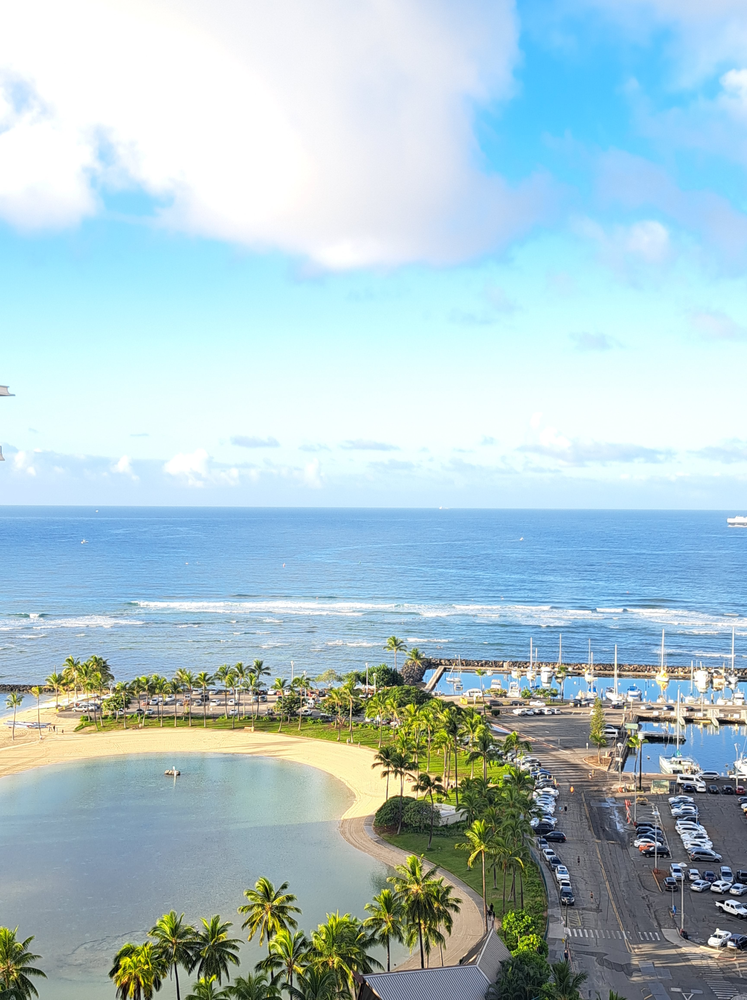
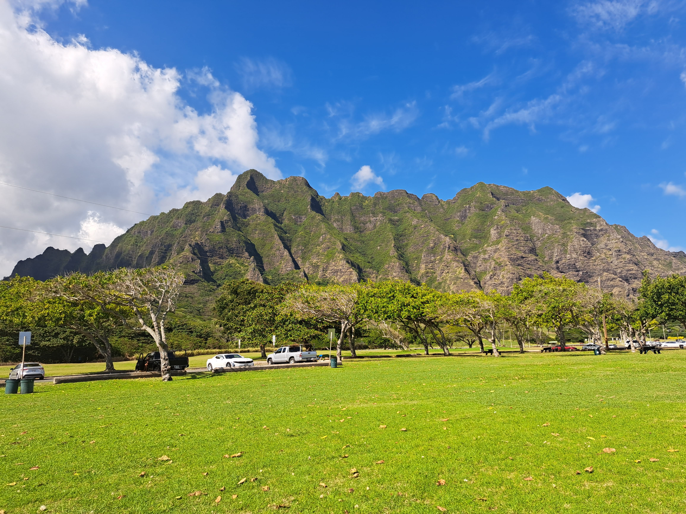

United States Of America
Hawaii - Visited in December 2022
Highlights from the USA



My Experience in Hawaii
Hawaii was a breathtaking blend of adventure and tranquility. Touring the island revealed stunning landscapes—from the dramatic cliffs of the Na Pali Coast to the golden sands of Waikiki Beach. A standout moment was visiting the Dole Pineapple Plantation, where I discovered the fascinating process of pineapple farming and indulged in delicious fresh pineapple. Swimming with turtles in the warm, turquoise waters was an experience I’ll never forget; it felt magical to share the ocean with such graceful creatures.